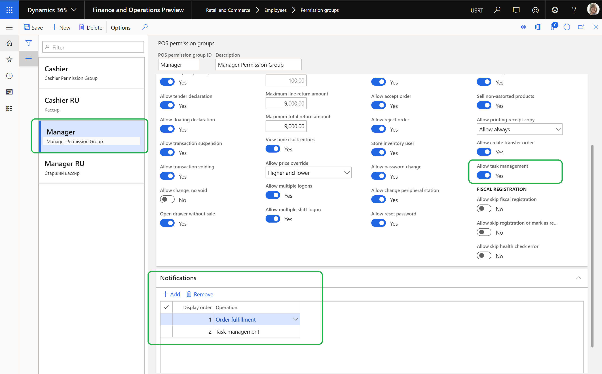
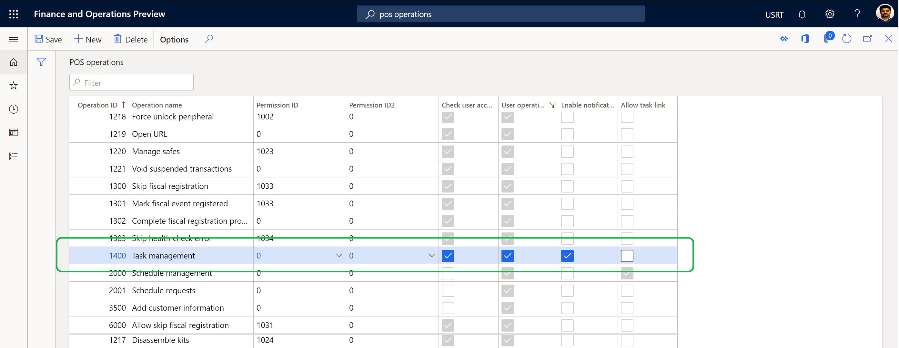
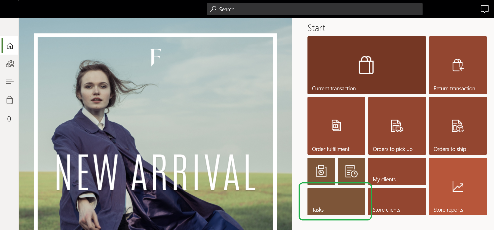

Konfigurieren der Aufgabenverwaltung
Important
Dynamics 365 Retail ist jetzt Dynamics 365 Commerce und bietet umfassende Handelsfunktionen für alle Kanäle – von E-Commerce über Shops bis hin zu Callcentern. Weitere Informationen zu diesen Änderungen finden Sie unter Microsoft Dynamics 365 Commerce.
In diesem Thema wird beschrieben, wie die Aufgabenverwaltungsfunktionen in Microsoft Dynamics 365 Commerce konfiguriert werden.
Übersicht
Bevor Dynamics 365 Commerce Manager und Mitarbeiter die Aufgabenverwaltungsfunktionen im Handel nutzen können, muss die Aufgabenverwaltung konfiguriert werden. Zu den Konfigurationsschritten gehören die Erteilung von Berechtigungen an Manager und Mitarbeiter, die Verteilung von Berechtigungen an POS-Kunden, die Einrichtung von POS-Benachrichtigungen und die Konfiguration der Kachel Aufgaben auf der Startseite einer POS-Anwendung.
Konfigurieren von Berechtigungen für Filialleiter
Jeder Mitarbeiter in einem bestimmten Geschäft kann alle Aufgaben, die diesem Geschäft zugeordnet sind, einsehen. Er kann auch den Status der ihm zugeordneten Aufgaben aktualisieren. Personen wie Filialleiter müssen jedoch über Aufgabenmanagementberechtigungen verfügen, um Aufgaben zu verwalten, die der Filiale zugeordnet sind, und um Einzweck-Aufgaben zu erstellen.
Führen Sie die folgenden Schritte aus, um Aufgabenverwaltungsberechtigungen für Filialleiter zu konfigurieren.
- Gehen Sie zu Retail and Commerce > Mitarbeiter > Berechtigungsgruppen.
- Wählen Sie eine bestimmte Berechtigungsgruppe (z.B. Manager) und wählen Sie dann Bearbeiten.
- Setzen Sie auf der Registerkarte Berechtigungen die Option Aufgabenverwaltung erlauben auf Ja.
- Fügen Sie auf der Registerkarte Benachrichtigungen den Vorgang Aufgabenverwaltung hinzu und geben Sie einen Wert in das Feld Anzeigereihenfolge ein. Geben Sie z.B. 2 ein, wenn die Operation Auftragserfüllung bereits einen Wert von Anzeigereihenfolge von 1 hat.
Note
Wenn eine nicht leitende Person die Berechtigung zur Aufgabenverwaltung in der Kasse haben muss, können Sie der Person die Berechtigung erteilen. Alternativ dazu können Sie eine neue Berechtigungsgruppe für Nicht-Manager anlegen und die Option Aufgabenverwaltung erlauben auf Ja setzen.
Die folgende Abbildung zeigt, wie Sie Aufgabenverwaltungsberechtigungen für Filialleiter konfigurieren können.

Konfigurieren Sie Berechtigungen für Mitarbeiter
Die Mitarbeiter müssen über Berechtigungen zur Erstellung von Aufgabenlisten, zur Verwaltung von Zuordnungskriterien und zur Konfiguration der Wiederholung von Aufgabenlisten verfügen. Um diese Berechtigungen zu konfigurieren, ordnen Sie die Mitarbeiter der Rolle Aufgabenmanager zu.
Um die Berechtigungen für einen Mitarbeiter zu konfigurieren, führen Sie die folgenden Schritte aus.
- Gehen Sie zu Retail and Commerce > Mitarbeiter > Benutzer.
- Wählen Sie einen Mitarbeiter aus.
- Wählen Sie auf der Registerkarte Rollen des Benutzers Rollen zuweisen.
- Wählen Sie im Dialogfenster Rollen zu Benutzer die Rolle Retail Task Manager und dann OK.
Berechtigungen an POS-Kunden verteilen
Bevor Mitarbeiter POS-Clients verwenden können, müssen die Berechtigungen an diese Clients verteilt und synchronisiert werden.
Führen Sie die folgenden Schritte aus, um Berechtigungen an POS-Clients zu verteilen.
- Gehen Sie zu Retail and Commerce > Retail and Commerce IT > Vertriebsplan.
- Wählen Sie den Verteilungsplan 1060 (Mitarbeiter) und wählen Sie dann Jetzt ausführen.
- Wählen Sie den Verteilungsplan 1070 (Kanalkonfiguration) und wählen Sie dann Jetzt ausführen.
Konfigurieren Sie POS-Benachrichtigungen für Aufgaben
Die Aufgabenverwaltung muss so konfiguriert werden, dass Benachrichtigungen in der POS-Anwendung verfügbar sind.
Um POS-Benachrichtigungen für Aufgaben zu konfigurieren, führen Sie folgende Schritte aus.
- Gehen Sie zu Einzelhandel und Handel > Kanaleinstellung > POS-Einrichtung > POS > POS-Operationen.
- Suchen Sie den Vorgang 1400 (Taskmanagement) und markieren Sie dafür das Ankreuzfeld Benachrichtigungen aktivieren.
Die folgende Abbildung zeigt die Operation Aufgabenverwaltung auf der Seite POS-Operationen.

Weitere Informationen über die Konfiguration von POS-Benachrichtigungen finden Sie unter Bestellbenachrichtigungen in der Verkaufsstelle (POS) anzeigen.
Konfigurieren Sie die Tasks-Kachel auf der Homepage einer POS-Anwendung
Bevor Sie die Kachel Aufgaben auf der Startseite einer POS-Anwendung konfigurieren, finden Sie unter Bildschirm-Layouts für die Verkaufsstelle (POS) Informationen über die Konfiguration und das Hinzufügen neuer Schaltflächen zu einem POS-Bildschirm-Layout.
Um die Kachel Aufgaben auf der Homepage einer POS-Anwendung zu konfigurieren, gehen Sie wie folgt vor.
- Gehen Sie zu Retail and Commerce > Kanal-Einrichtung > POS-Einrichtung > POS > Bildschirm-Layouts.
- Wählen Sie ein Bildschirmlayout, wählen Sie eine Layoutgröße und wählen Sie ein Schaltflächenraster.
- Wählen Sie auf der Registerkarte Schaltflächenraster Designer, um das ausgewählte Schaltflächenraster zu bearbeiten.
- Fügen Sie eine Aufgaben Kachel zum entsprechenden Abschnitt der Homepage hinzu.
Die folgende Abbildung zeigt ein Beispiel für eine Kachel Aufgaben auf einer POS-Homepage.

Zusätzliche Ressourcen
Überblick über die Aufgabenverwaltung
Aufgabenlisten erstellen und Aufgaben hinzufügen